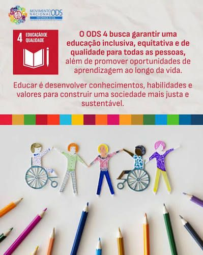
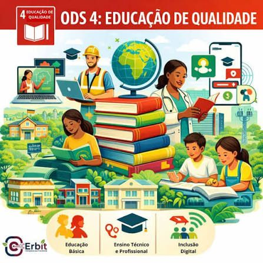
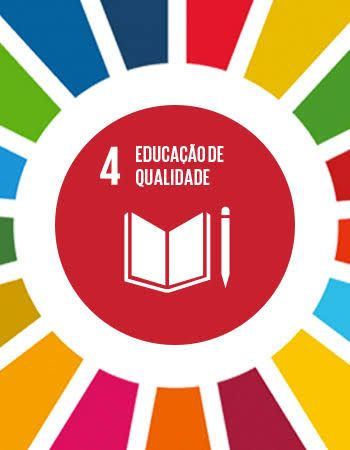

Ensino básico para todos
Meninas e meninos concluem o ensino fundamental e médio, gratuito e de qualidade.
Assegurar a educação inclusiva, equitativa e de qualidade, e promover oportunidades de aprendizagem ao longo da vida para todas as pessoas.
A ODS 4 é um dos 17 Objetivos de Desenvolvimento Sustentável da Agenda 2030, adotada pelas Nações Unidas em 2015. Seu foco é garantir que todas as pessoas, de qualquer idade, gênero ou condição social, tenham acesso a uma educação que realmente ensine, desde a infância até a vida adulta.
Educar é desenvolver conhecimentos, habilidades e valores para construir uma sociedade mais justa e sustentável.

Meninas e meninos concluem o ensino fundamental e médio, gratuito e de qualidade.
Acesso a cuidados e a educação pré-escolar que preparem para o ensino fundamental.
Acesso igualitário à formação profissional e universitária, a preços acessíveis.
Mais jovens e adultos com competências técnicas para emprego e empreendedorismo.
Fim das disparidades de gênero e acesso para pessoas com deficiência, povos indígenas e populações vulneráveis.
Mais docentes formados e valorizados, com boas escolas e materiais.

Dados gerais; consulte UNESCO, ONU e IBGE para números atualizados.

Incentive a leitura, acompanhe a vida escolar de crianças próximas e apoie bibliotecas e projetos de bairro.
Ofereça reforço escolar, mentoria ou aulas a quem tem pouco acesso a ensino de qualidade.
Acompanhe o orçamento da educação, participe de conselhos escolares e cobre políticas públicas para a área.
Cursos gratuitos, livros e troca de conhecimento: a aprendizagem não tem idade para acabar.